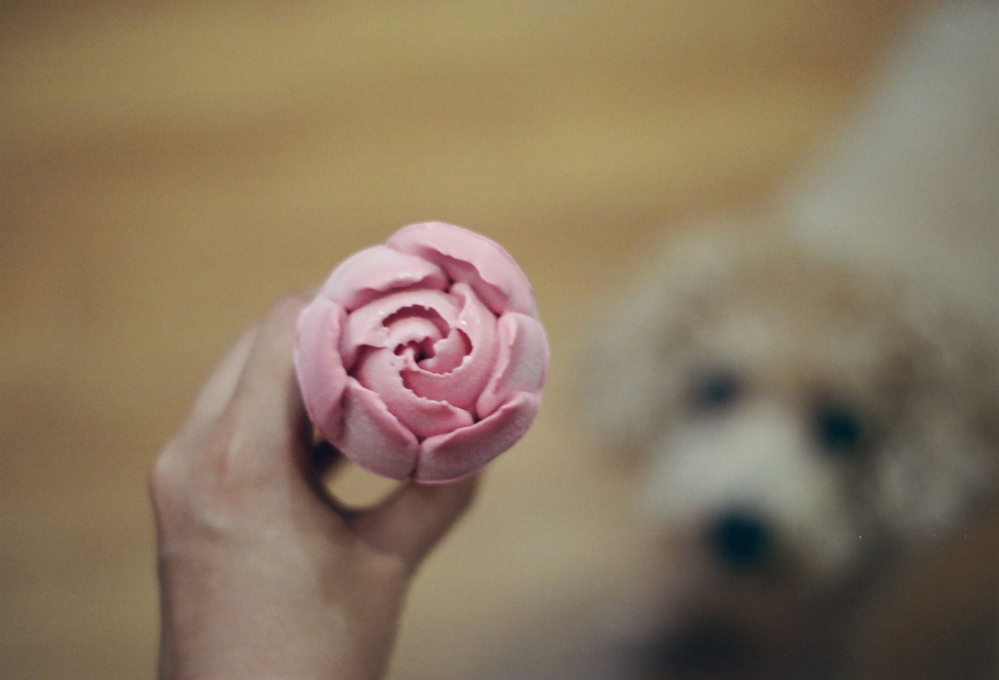
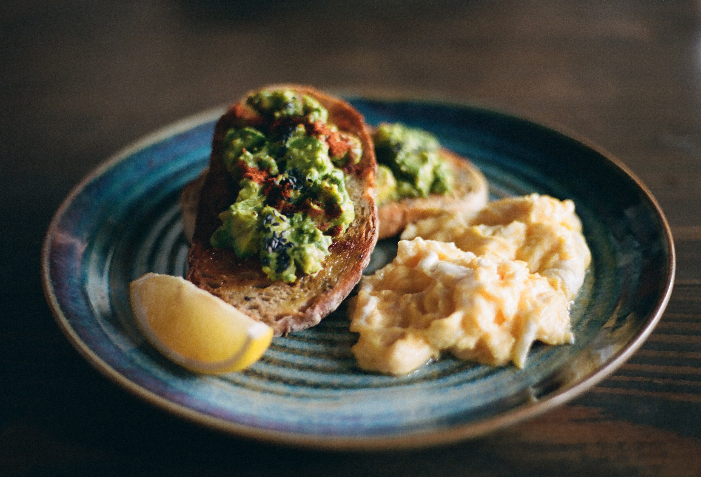

Hi,
I just felt urged to write something but could think of no one
to write to. So I decided to dedicate this letter to you – my
future self one year from now. Please try to breathe, and live
until the day you – yes you, not me of the present – get to read
this letter. I know you’re slowly giving up but don’t rush just
yet.
The problem is that nothing about you is certain. Sorry I have
absolutely no specific plan for me, for you, for us. Well, I
have jobs and can afford a place to sleep at night, for now but
not so sure in one month’s time. I have been working hard to
earn my living and to keep myself occupied as much as possible.
I wander around the streets when I have nothing to do. I don’t
return home until it’s really late. I don’t cook. I don’t have
regular meals. Instead, I acquired a taste for black coffee and
brew my own coffee every day. I always leave lights on at night
and often wake up in the middle of the night at 3 or 4 am, with
snapshots of scattered memories running through my mind.
Sometimes I’ll manage to lull myself back to sleep. Sometimes
I’ll get up, to take a shower, to wash thoughts away, to recover
my emptiness. I long for the night when I am working in the day.
And I long for the morning when I am awake at night. This has
been me for years, possibly you for the time to come, and still
us until the end of life.
I put on my earphones whenever I am on the bus, blending into
the crowd or walking alone on the street. I’d rather not involve
myself in jokes, small talks, chitchats. They are all noises to
my ears. But I do love having conversations – you know the kind
of conversations where we feel trusted enough to open up, share
our honest thoughts, tell our untold stories, cry our hearts
out. We’ll look into each other’s eyes until our souls are
soothed, our hearts are healed, and we both smile. But you see
that I can’t do any of those things all alone. I just happen to
be alone a little too much.
People came talk to me sometimes anyway. They asked me questions
about someone far away. I’d make up lies from time to time just
to satisfy their curiosity and make them stop. Then they asked
me questions about someone near me. I’d fake ignorance and laugh
it away. At last, they asked me questions about you and me. And
I’d just keep silent, shrugging it off. I couldn’t say a word.
They would freak out if they knew part of the mess I’m in.
Sometimes I really want to know how it feels to have someone
call to check if things are going well with me, if I have had
meals, if I got caught in the rain, if I’ve arrived somewhere
safely, if I’ve got over sickness – if I am still alive. Well, I
would be dying to know everything about someone’s life if I
loved and cared about them. It must be a good feeling knowing
that you are loved and cared about, that you mean something to
someone. And I am dying to know how good it feels. But I am so
used to struggling things on my own that I don’t even feel sorry
for myself until someone says they feel sorry for me. I don’t
even feel pain until someone points the pain out for me. But the
pain, once being reminded and exposed to consciousness, will
shame you and pull you apart. It’s not the kind of pain you
could bear just by trying to. All you can do is just temporarily
cast it aside by redirecting your thinking to other pains of
yours. Pains last and stay. People don’t.
They say that a year from now, everything you’re stressed about
won’t even matter. Well, I doubt it. But by this letter, I am
giving us a try. How I wish I could just fast forward this one
year and take a leap right into the future, where all those that
are bothering me would not be able to bother me anymore.
Wish me strength to move on and wish you patience to wait.
Life has to go on. I will see you.


Write Your Comments